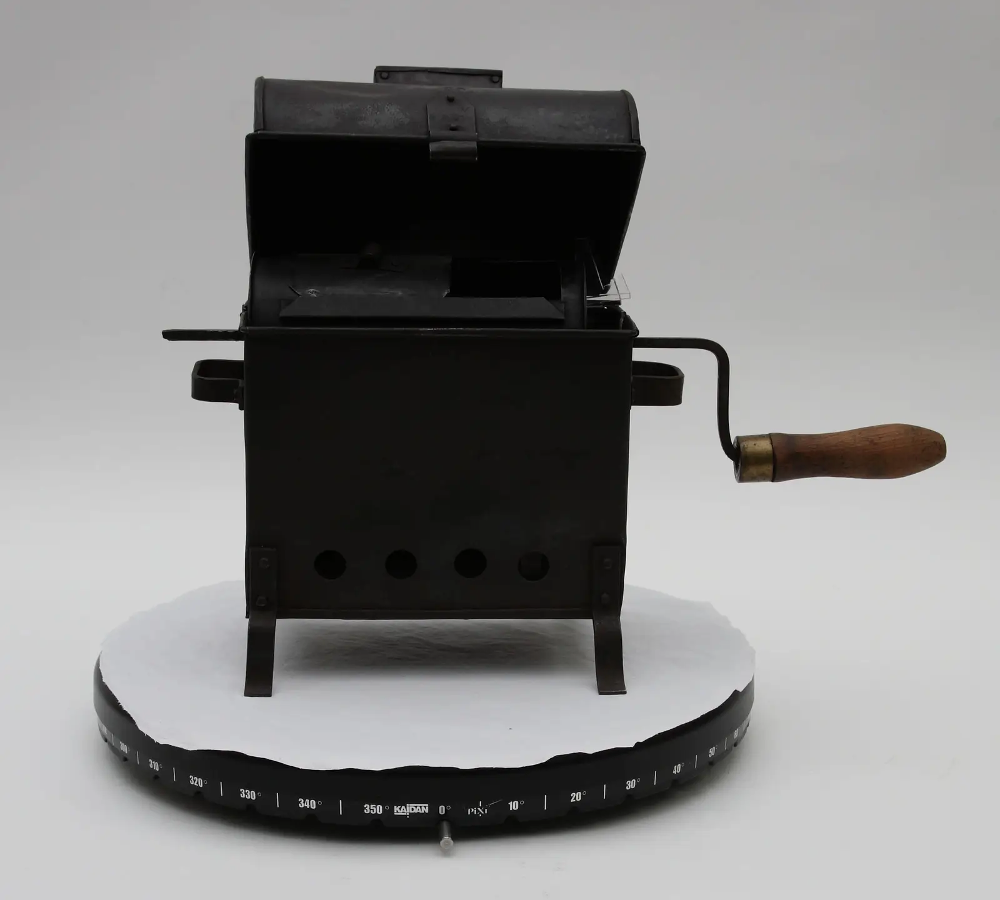

Çekirdekten iskeleye, dört durak.
Lodos'ta bir fincanın sabahı. Kemankeş Cd. 12, Karaköy.
Bir sabah, Lodos'ta01 / 04
07.00
Kazan ısınıyor.
Her sabah 07.00'de, 12 kg'lık tek kazanla kavuruyoruz.
haftada 4 çekirdek
Bugünün kavrumu.
Lodos harmanı, Etiyopya Guji, Kolombiya Huila ve Türk kahvesi kavrumu.
6 dakika kala
Sıra beklemeden.
Vapurun kalkışına 6 dakika kala sipariş verene sıra yok.
90 saniye
Kahven elinde, iskeleye.
Karaköy iskelesine 90 saniye. Halatlar çözülmeden yetişirsin.



 Kavurma odası
Kavurma odası